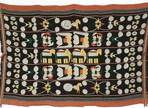
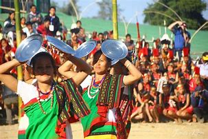
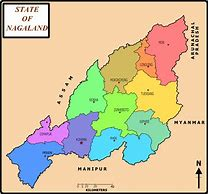

Arts

Nagaland is renowned for its rich tradition of arts and crafts, reflecting the creativity and skills of its people. The state is particularly famous for its exquisite handloom and handicraft products, including intricately woven shawls, bamboo and cane products, wood carvings, and traditional jewelry. Each of the 16 tribes of Nagaland has its unique artistic styles and techniques, which are reflected in their creations. These crafts are not just products but are embedded with cultural significance and traditional symbolism.
Language
The official language of Nagaland is English, which is used for educational and administrative purposes. However, the state is a linguistic mosaic with over 36 distinct languages and dialects spoken by various tribes. Some of the widely spoken tribal languages include Ao, Angami, Sumi, Lotha, and Konyak. These languages belong to the Tibeto-Burman language family and have rich oral traditions, passed down through generations. Each language carries its own unique cultural heritage, myths, folklore, and traditional knowledge.
Dance

Dance is a vital aspect of Naga culture, serving as a vibrant expression of their traditions and beliefs. Each tribe has its own distinctive dance forms, which are performed during festivals, harvests, and religious ceremonies. Traditional Naga dances are often accompanied by folk songs and indigenous musical instruments like log drums, bamboo flutes, and cymbals. These dances are characterized by rhythmic movements, elaborate costumes, and symbolic gestures that narrate stories of valor, romance, and folklore. Festivals like the Hornbill Festival provide a platform for showcasing these diverse dance forms to a broader audience.
Geographical Areas

Nagaland, situated in the northeastern part of India, is characterized by its stunning landscapes and diverse topography. The state is predominantly mountainous, with the Naga Hills running across its length and breadth. It shares borders with Assam, Arunachal Pradesh, Manipur, and Myanmar. Some of the notable geographical features include the picturesque Dzukou Valley, known for its breathtaking flora, and Mount Saramati, the highest peak in Nagaland standing at 3,826 meters. The region's dense forests, rolling hills, and vibrant valleys offer numerous opportunities for trekking, bird-watching, and exploring the rich biodiversity. The climatic conditions vary from tropical to sub-temperate, making Nagaland a haven for nature enthusiasts.